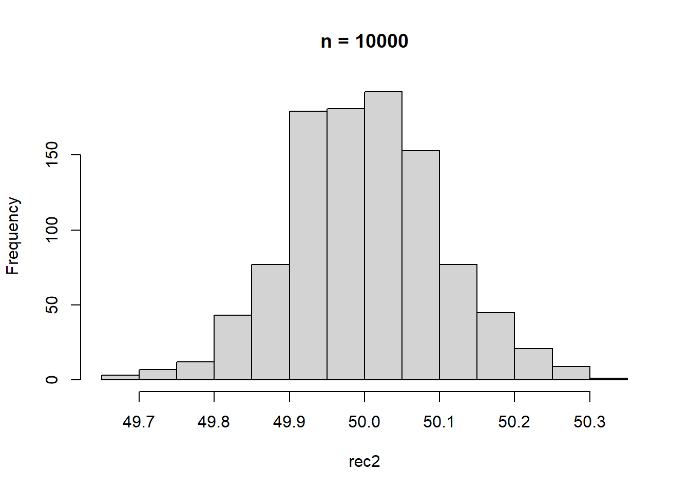
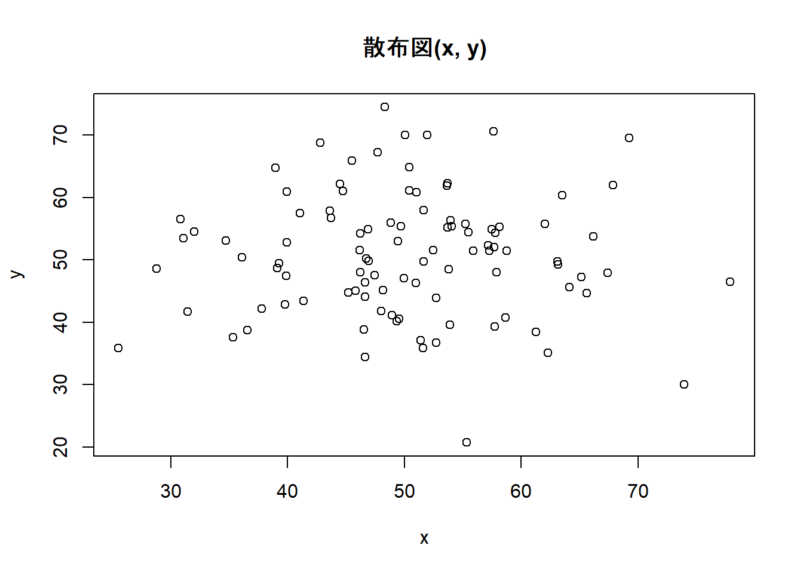
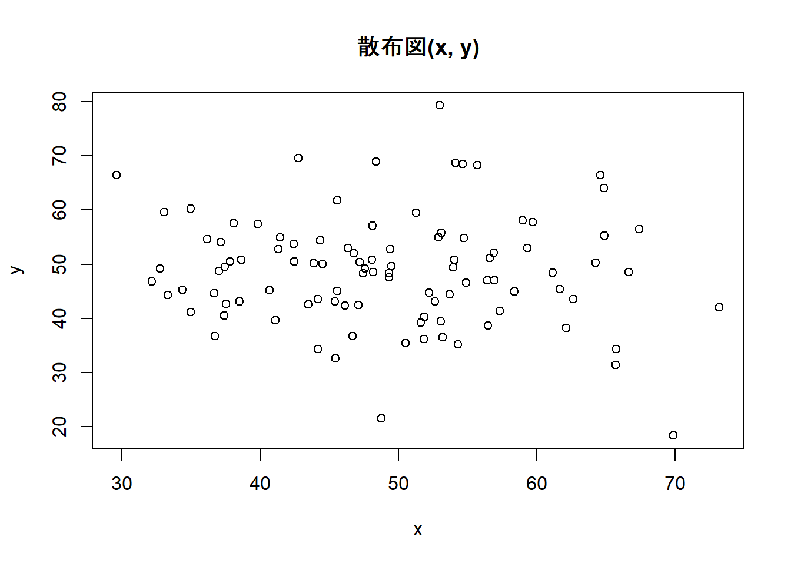
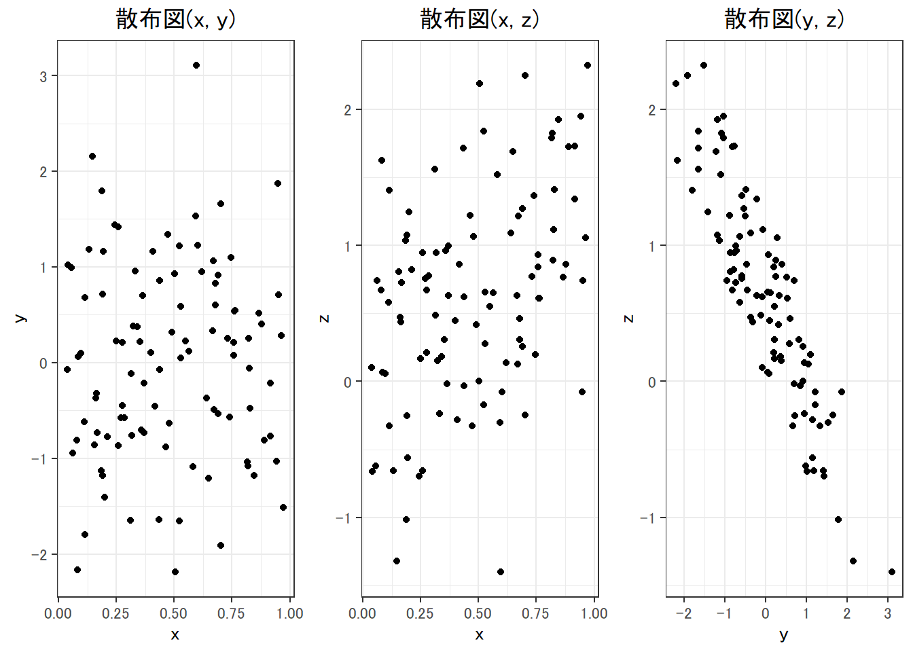

Week2 | Rによる自主勉強会
伊﨑 直志
2023年10月13日
準備
Loading Packages
library(tidyverse)
library(dplyr)
library(gridExtra)##
## 次のパッケージを付け加えます: 'gridExtra'## 以下のオブジェクトは 'package:dplyr' からマスクされています:
##
## combinewindowsFonts(family_sans = windowsFont("Noto Sans JP"))
par(family = "family_sans")
knitr::opts_chunk$set(echo = TRUE)第1章 回帰分析の目的
1.1. 相関と因果
相関関係 correlation：「Xが変化すればYも変化する」
因果関係 causality：「Xを変化させればYも変化する」
疑似相関 spurious correlation
「変数XとYに共通の第3の要因Zが存在することによってXとYに生じる見せかけの相関関係」
e.g. 個人所得の増加 →タバコへの支出増加、医療・健康への支出増加 ＝タバコと健康の疑似相関
- 時間的先行性: 原因となる現象が結果となる現象に時間的に先立って起きている。
- 共変関係（相関関係）: 原因となる現象が変動すると、結果となる現象も変動する。
- 他条件の同一性: 原因となる現象の双方に与える現象は存在しないか、その影響は統制されている。
1.2. 回帰と予測
一次関数 \(y=a+bx\) の形で表現 →最小二乗法（least squares estimation）（図1.1 →図1.6）
回帰直線、回帰式、回帰係数
回帰式の一方の変数に代入してもう一方の変数の値を計算、予測
ある変数Xの値をもとにして、他の変数Yの値を予測 ＝回帰分析
X：説明変数、Y：被説明変数⇒因果解釈ではなく、あくまで予測解釈！
回帰分析 →Xが与えられた時のYの値の予測
1.3. 自然科学のデータと社会科学のデータ
実験の難しさ（費用等コスト、倫理）
⇔自然科学：変数選択の制約・影響少、実験室実験可（変数統制） [従来的説明]
→現在、社会科学における実験多数：実験経済学等 or 自然実験…（後述）
第2章 統計の基礎知識
2.1. 母集団と標本
（有限集団全体）母集団－（抽出）標本
（確率分布）母集団－（観測値）標本 （←本書）
正規分布 normal distribution
正規分布\(N(平均, 分散=標準偏差^2)\)
正規分布（乱数）: rnorm(個数, 平均, 標準偏差)
rnorm(100, 50, 10) ## [1] 55.42598 48.63779 40.65052 45.23117 41.77239 50.38801 53.35267 63.43651
## [9] 51.55790 48.57174 40.51020 41.94039 49.58506 39.81711 53.56197 39.86380
## [17] 46.96497 55.53497 53.58914 46.66945 54.27801 35.92152 69.08981 49.21631
## [25] 46.04052 53.37710 65.17926 32.55540 66.42834 49.54271 53.52356 52.51057
## [33] 59.26101 58.66059 51.14122 41.13003 48.51100 55.93921 42.51035 51.97652
## [41] 60.36646 43.55959 44.07258 62.44855 48.34149 49.87586 63.89889 46.24148
## [49] 29.47406 56.20922 59.38108 35.76203 45.23626 47.26592 46.78843 26.92901
## [57] 51.89298 52.34349 53.28636 40.57031 55.20645 49.69319 50.07079 41.23688
## [65] 61.86709 46.62855 51.21323 41.97363 51.84139 54.03584 52.30433 55.18335
## [73] 46.91007 43.90164 53.55467 57.18114 47.70983 52.90183 69.09647 52.91396
## [81] 65.48846 46.67040 71.61873 36.03123 59.77567 30.01904 58.02849 55.32142
## [89] 67.29098 60.79613 64.92244 46.26486 41.58926 46.23241 51.18943 49.21760
## [97] 41.49205 44.73510 54.35959 33.99232curve(dnorm(x, 50, 10), 0, 100) #正規分布のグラフ描画
pnorm(60, 50, 10) #大きさ１の標本の値が60より小さくなる確率## [1] 0.8413447| 命令 | 説明 | （英略） |
|---|---|---|
rnorm(n, a, b) |
平均a, 標準偏差bの正規分布乱数をn個発生させる。 | random+norm |
dnorm(x, a, b) |
平均a, 標準偏差bの正規分布について, 密度関数の点xにおける値を計算する。 | density+norm |
pnorm(x, a, b) |
平均a, 標準偏差bの正規分布について, 分布関数の点xにおける値を計算する。 | probability+norm |
正規分布グラフ 描画関数
curve(dnorm(x, a, b), min, max) #curve(関数の式,
横軸の最小値, 横軸の最大値)
2.2. 無作為抽出
母集団から標本を抽出（random sampling）
rnorm(100, 50, 10)## [1] 40.12194 60.50759 46.55492 64.74736 55.83115 67.81876 40.49009 52.63382
## [9] 52.83959 32.62505 44.91534 53.74900 56.85985 46.87973 40.64839 59.96221
## [17] 39.78959 42.48002 55.76371 54.42159 46.94899 62.06129 51.93606 48.87768
## [25] 45.02457 62.21210 41.93127 41.41949 44.79017 56.88391 43.14108 54.98827
## [33] 53.95240 49.36808 60.63023 39.72842 20.96054 65.16516 53.46858 51.68851
## [41] 54.80472 48.40761 65.30577 33.76050 49.20254 60.87080 50.12175 44.96916
## [49] 43.07632 66.27160 50.50947 48.59730 62.84429 30.55479 59.99069 47.84416
## [57] 54.70971 50.80609 59.76067 51.38024 51.19241 45.60451 34.68702 44.24102
## [65] 40.41833 51.88423 59.46392 36.55613 48.29603 48.60469 67.04648 54.34202
## [73] 56.12877 57.04543 37.08311 67.03029 50.96510 48.38168 51.63337 46.61134
## [81] 46.06969 39.69050 59.17039 57.44440 45.21982 52.22375 44.35126 45.74707
## [89] 54.60847 62.76232 33.59671 58.12157 54.32896 48.28609 33.13572 54.65704
## [97] 28.60057 25.34325 48.96867 51.11376Z <- rnorm(100, 50, 10)
Z## [1] 43.24071 63.25339 43.15939 42.79239 51.09626 50.94975 69.85802 42.33615
## [9] 47.70197 41.29469 51.85301 43.71894 31.99426 47.11741 28.58698 62.88552
## [17] 44.27342 66.69877 49.04849 52.68491 37.88900 43.06245 62.55828 52.32772
## [25] 50.22571 57.27579 45.18137 39.32584 60.81009 48.79302 48.23954 46.15730
## [33] 42.92169 51.65946 44.31279 61.53076 16.12836 72.36524 61.34442 52.56640
## [41] 40.24764 45.04410 44.45402 33.45308 46.03577 47.97353 43.81305 46.04471
## [49] 60.60909 43.87956 41.65076 52.56192 44.36552 56.41253 49.12857 56.36522
## [57] 42.74556 44.02497 43.93994 60.20997 50.92722 40.19532 38.52933 63.88389
## [65] 51.57706 45.40218 41.34307 50.26693 41.36612 55.73214 41.43883 49.44826
## [73] 41.54000 40.79144 45.87271 41.80587 47.86270 43.66779 51.13001 42.11357
## [81] 49.95521 53.09678 38.44920 48.30400 40.64355 35.49552 61.04562 60.29296
## [89] 40.75697 43.61557 48.02635 32.99949 55.52681 47.57427 61.39353 61.92145
## [97] 51.23460 59.95785 48.35961 54.29571hist(Z) #ヒストグラム
Z[1:10] #最初の10個のデータを抜き出し## [1] 43.24071 63.25339 43.15939 42.79239 51.09626 50.94975 69.85802 42.33615
## [9] 47.70197 41.29469a <- c(5, 10, 100)
Z[a] #5番目,10番目,100番目の位置にある数字を抜き出し## [1] 51.09626 41.29469 54.29571Z[c(5, 10, 100)] #aを使わずに同上の操作## [1] 51.09626 41.29469 54.29571#特定の意味を持つ数値を抽出
max(Z) #最大値## [1] 72.36524which.max(Z) #最大値の位置## [1] 38min(Z) #最小値## [1] 16.12836which.min(Z) #最小値の位置## [1] 37mean(Z) #平均値## [1] 48.30019summary(Z) #基本統計量を一括表示## Min. 1st Qu. Median Mean 3rd Qu. Max.
## 16.13 42.78 47.64 48.30 52.60 72.371:10## [1] 1 2 3 4 5 6 7 8 9 10sample(1:10, 3) #無作為抽出、sample(範囲, 抽出個数)## [1] 5 4 9sample(Z, 5) #sample(標本, 抽出個数)## [1] 45.40218 61.92145 59.95785 48.30400 40.75697sample(Z, 5) #sample(標本, 抽出個数)## [1] 51.23460 35.49552 16.12836 62.88552 41.43883fruits <- c("ミカン", "バナナ", "リンゴ", "レモン", "モモ")
fruits## [1] "ミカン" "バナナ" "リンゴ" "レモン" "モモ"sample(fruits, 1) #fruitsから1個抽出## [1] "リンゴ"sample(fruits, 2) #fruitsから2個抽出## [1] "リンゴ" "バナナ"sample(fruits, 1) #fruitsから1個抽出## [1] "モモ"sample(fruits, 1) #fruitsから1個抽出## [1] "レモン"コイン投げ1
coin <- c("Head", "Tail")
#sample(coin, 5) #うまくいかない ∵非復元抽出になっている
sample(coin, 5, replace = TRUE) #復元抽出, replace=TRUE## [1] "Tail" "Tail" "Tail" "Head" "Tail"2.3. 平均と大数の法則
- ①ベクトルrecのi番目の場所rec[i]に
- ②母集団N(50,10^2)から抜き出した大きさ100の標本の平均を格納する
Rにおけるfor ループ（繰返処理）
for (アイテム in シーケンス) {アイテムを用いたオペレーションの指示}
出典: 16 ループと反復処理・リストの操作 | 疫学のための R ハンドブック
mean(Z) #標本平均## [1] 48.30019mean(rnorm(100, 50, 10))## [1] 50.79566mean(rnorm(100, 50, 10)) #Z <- rnorm(100, 50, 10)## [1] 48.65528#より多い試行、抽出1000回、標本の大きさ100
S <- 1000
rec1 <- numeric(S)
for(i in 1:S){
rec1[i] <- mean(rnorm(100, 50, 10))
}
rec1## [1] 48.96934 51.12488 47.57814 50.02208 49.63116 48.70922 48.63254 50.45487
## [9] 50.23060 49.97244 49.91247 51.35418 50.39191 50.13029 49.06640 50.14876
## [17] 49.40818 49.12309 51.14064 50.66638 51.23622 48.40386 50.58282 50.38205
## [25] 51.76746 51.97082 50.59160 51.87309 50.24141 52.00005 48.89578 49.27898
## [33] 49.57382 49.85355 48.57401 48.99949 50.31659 49.80903 50.90701 49.88343
## [41] 49.75213 51.06178 48.17878 48.69745 49.94235 50.55975 49.81073 49.63924
## [49] 50.03685 49.57880 49.36044 51.80781 48.77256 50.66193 48.85559 50.37719
## [57] 49.10788 49.62615 52.36269 50.76976 48.87514 49.96749 50.03926 50.70041
## [65] 49.35411 50.82243 49.46880 51.24944 50.01800 49.76948 48.15467 52.04711
## [73] 49.32436 50.08330 49.62060 51.37841 50.78716 49.48936 50.76657 48.84736
## [81] 51.25816 49.90055 50.80843 50.16418 50.49811 50.91734 48.88315 50.94084
## [89] 49.70604 50.48014 49.99705 51.60771 50.78393 51.54112 51.16813 50.99492
## [97] 49.00457 49.11037 49.98053 49.94155 49.46363 48.63550 49.43840 48.58071
## [105] 48.14511 48.82043 50.27158 50.18557 50.68058 49.14989 48.82574 48.54195
## [113] 50.07041 51.59044 51.15374 49.49215 51.18273 48.83483 49.67997 48.85694
## [121] 49.77297 49.48426 50.00803 50.48165 48.02579 48.73195 50.01558 50.50518
## [129] 49.78648 49.81958 49.85143 49.76100 49.60497 49.36508 49.10346 48.41633
## [137] 51.19851 50.62035 51.54630 49.08614 50.41314 50.22576 49.16327 49.36784
## [145] 48.84636 51.45391 51.15068 50.60733 48.60798 51.10291 49.27861 49.99425
## [153] 48.71339 49.66367 51.79655 49.77239 50.13487 52.17364 49.67009 50.24927
## [161] 50.52711 50.27720 50.23745 49.51647 49.90435 49.87542 50.63728 51.28228
## [169] 50.23946 49.14205 50.23254 50.09202 48.51823 51.02538 49.27935 50.49674
## [177] 50.28438 51.21989 50.07543 49.81250 49.76286 52.29790 51.41497 51.10063
## [185] 50.77939 49.77376 49.45296 50.97033 50.32932 50.56991 48.85670 51.11290
## [193] 49.51717 49.40046 50.26520 50.80049 50.05693 50.30615 49.35487 48.45347
## [201] 49.86111 48.73469 48.62455 49.76716 50.24010 50.49549 49.90178 50.41529
## [209] 49.28843 50.06249 50.18520 50.75502 49.25351 50.77483 51.29122 49.12456
## [217] 50.22922 49.70513 50.24203 51.76732 49.31048 48.77074 51.13625 49.74888
## [225] 48.91179 49.06724 49.54395 50.89018 50.55121 49.87647 49.28418 48.87142
## [233] 48.61942 50.11302 50.10637 49.26463 49.48910 50.76170 49.63342 49.46782
## [241] 51.19972 50.71298 50.38566 50.45908 49.60056 50.57251 50.90877 50.09922
## [249] 50.08635 48.48039 49.89552 50.22886 48.96457 51.45249 50.73609 50.66247
## [257] 50.10760 48.29667 49.10913 49.88694 50.08620 49.63946 52.25974 50.96237
## [265] 50.79316 49.65019 48.03417 48.70899 49.65801 50.67780 50.36624 49.93053
## [273] 49.83636 48.45453 49.39677 49.44472 49.84905 49.62218 50.75019 50.34231
## [281] 49.93436 51.08170 49.19439 49.70408 51.12353 51.22291 48.92428 49.47198
## [289] 51.05507 49.32360 50.97273 50.91390 48.40352 51.27916 49.93163 48.83506
## [297] 52.31999 51.52684 50.10170 50.54969 48.02958 50.45858 50.29132 49.51132
## [305] 50.58891 50.93667 49.86510 48.98431 49.90145 49.50500 50.89495 50.77231
## [313] 49.98757 50.17157 47.67080 49.84111 50.36593 51.55836 50.01662 49.94469
## [321] 50.66964 50.39941 49.68669 51.29301 51.10833 47.47863 51.79713 49.59907
## [329] 50.18044 50.34439 50.19139 49.42898 50.44390 48.90607 51.57562 50.81927
## [337] 50.75481 49.13854 50.20926 48.98565 50.47051 49.45661 50.63660 50.76367
## [345] 49.10046 50.06474 50.36664 50.58825 49.34054 50.58237 48.65491 51.04622
## [353] 49.06445 50.75009 50.26961 51.27107 48.40905 52.05151 49.88027 50.14616
## [361] 49.65197 50.04200 50.32597 51.20594 52.20810 49.55472 50.57763 50.94415
## [369] 50.22803 48.94437 49.15684 51.02576 50.94872 52.36266 51.67581 50.78240
## [377] 50.35965 51.40325 51.43784 50.72841 51.37205 50.33289 49.46604 51.54809
## [385] 52.20031 48.53529 49.36228 50.05123 49.05993 50.10554 50.79587 47.58996
## [393] 50.68374 49.56581 50.04330 51.69922 51.75722 51.22001 49.88287 50.26068
## [401] 50.17326 50.93770 47.98021 49.10066 49.21916 49.58572 49.86717 48.42653
## [409] 50.55207 50.56466 51.46674 48.85370 49.84472 49.83728 50.17352 51.64119
## [417] 51.73830 51.53476 51.23873 51.43033 50.20298 51.01981 50.31363 49.43591
## [425] 48.19718 47.56689 48.91828 49.35836 49.86433 49.61520 49.97992 48.40963
## [433] 50.43215 49.76956 48.97057 50.41987 49.85400 49.12445 49.39778 49.82935
## [441] 50.06924 48.97084 48.86960 50.02317 49.14268 48.85600 50.52817 50.07193
## [449] 48.64535 50.93562 49.45614 50.74439 51.02215 51.20124 51.36323 50.17847
## [457] 50.61794 49.79678 48.74051 48.61533 49.92513 51.19392 49.20157 49.43867
## [465] 49.58029 49.92610 50.33741 48.90327 48.21076 48.34408 49.97906 49.71789
## [473] 49.71528 48.79106 49.34326 48.22578 49.96672 50.65752 51.07783 51.21816
## [481] 50.33763 51.26053 50.79199 50.13120 49.56333 50.04933 49.75878 50.70404
## [489] 49.92883 50.92017 51.70702 48.38717 50.56817 49.41378 48.98988 50.09705
## [497] 50.59765 50.42323 49.69156 49.51652 49.18861 50.15676 49.91017 49.84529
## [505] 50.24337 49.75936 46.33750 49.51727 52.48732 49.66862 50.96460 50.23369
## [513] 49.13221 51.20035 50.48392 48.88398 50.86673 51.34930 49.80513 50.17950
## [521] 51.80956 50.59278 49.64903 50.44737 49.63255 50.04515 49.91928 50.27367
## [529] 50.32574 49.79680 48.94723 49.52979 50.39036 50.77142 47.49268 51.78594
## [537] 51.19854 49.62366 49.54305 49.41863 50.17165 49.78053 50.07463 50.73252
## [545] 48.64744 50.28806 50.48686 50.05330 48.58806 49.14322 47.37929 50.27749
## [553] 51.33832 47.52745 51.66805 49.07793 51.89282 49.59216 50.16543 51.04140
## [561] 49.36363 51.31100 49.86002 50.29466 51.01908 51.32026 49.38253 49.23549
## [569] 49.31687 50.75575 49.09986 52.02022 50.92914 50.23549 50.46739 49.53924
## [577] 51.40524 49.54979 49.73223 50.09368 50.16624 51.34585 50.07746 50.27979
## [585] 50.71837 50.82283 47.15212 50.19278 49.43101 49.88270 49.90667 49.85038
## [593] 50.20402 48.77684 50.19759 48.06864 50.52516 49.69594 47.88320 49.63454
## [601] 50.34938 51.04544 47.95000 50.18991 49.42597 50.23627 50.96532 48.84639
## [609] 49.55836 50.53515 49.32561 49.39018 51.73512 49.68676 49.17438 50.29220
## [617] 51.26198 50.16104 51.18449 51.23339 49.61697 48.55141 49.31598 50.26866
## [625] 49.29582 51.30978 49.90858 50.97699 49.96636 49.59264 50.59055 50.75781
## [633] 49.83468 49.80293 51.72726 50.04580 52.60729 50.99262 49.04772 50.18032
## [641] 48.15900 50.28592 47.85742 49.88172 49.47049 50.52345 49.15376 49.79536
## [649] 50.88055 48.21055 47.85059 50.90710 49.51666 49.56461 50.50558 49.40156
## [657] 49.30371 51.32747 48.63774 48.04204 50.01233 51.13416 49.08064 47.36342
## [665] 48.41902 50.73269 51.04193 51.36821 49.16853 51.51996 50.28026 49.22676
## [673] 48.46203 48.65005 51.26638 50.11367 48.93625 49.72998 50.40933 51.68936
## [681] 49.66401 48.74392 49.24620 50.56401 50.65178 51.51463 49.00979 50.90031
## [689] 50.81494 50.31603 51.44249 50.41909 49.72095 50.05236 50.66621 49.22997
## [697] 49.38771 48.21446 49.99183 51.33253 50.09633 50.22000 50.31164 49.23944
## [705] 48.14015 51.40398 50.49412 48.58673 50.83088 51.14363 50.68124 50.39562
## [713] 50.23938 52.20494 51.93482 51.84949 49.06897 50.24638 50.13141 51.00411
## [721] 48.92195 48.12393 49.29156 48.85546 52.29844 49.86163 50.38285 48.54824
## [729] 48.60098 50.84293 50.74171 49.43057 50.85405 52.19264 48.76575 50.25652
## [737] 50.06656 50.85913 49.45876 50.29469 50.32683 48.00073 49.24787 51.30198
## [745] 48.71111 49.08692 50.24308 50.06392 51.74959 49.70609 50.03465 48.29318
## [753] 51.20116 48.75976 49.66509 51.13381 49.94714 48.48221 49.89305 49.64395
## [761] 49.49726 48.89205 51.16634 48.80343 50.69821 52.31096 49.07783 49.88290
## [769] 47.86256 50.73287 49.74974 50.91205 50.30938 50.24293 49.86698 51.30685
## [777] 49.64263 50.48576 48.01658 51.09279 50.64767 47.57790 47.15018 50.83576
## [785] 50.23175 49.57548 50.28922 50.51134 50.41451 49.28785 51.73214 51.26696
## [793] 50.35888 48.70553 51.04296 51.80707 50.67867 50.88884 49.99531 49.78468
## [801] 50.90224 50.06885 49.51519 49.68253 51.63293 51.24271 50.96271 50.06253
## [809] 50.37385 49.66084 49.61101 50.86900 50.56657 49.37715 49.21538 49.51134
## [817] 48.87331 49.92678 49.40401 48.95600 49.50779 51.01413 51.84098 50.35100
## [825] 51.36102 47.27815 49.01227 50.09786 50.27277 50.49161 52.55683 48.47018
## [833] 49.25617 49.00745 50.97087 50.98739 50.99041 49.62302 49.91600 49.85545
## [841] 51.11156 49.10598 47.65733 50.15344 49.04896 49.22625 48.98544 50.91460
## [849] 49.40442 50.39772 49.10159 48.43633 50.12606 49.39111 50.21796 49.64460
## [857] 52.86735 50.81665 51.27723 48.45637 50.34250 50.27024 49.25496 49.89501
## [865] 48.25566 50.39008 49.69868 50.79503 50.38357 49.46814 50.01244 49.26046
## [873] 50.28476 49.82005 51.14997 49.88611 50.58372 51.31674 50.45478 50.20808
## [881] 49.02146 48.64095 49.37830 48.62905 48.83204 50.76929 49.97502 49.37345
## [889] 48.84509 50.12870 52.60285 50.73574 51.77430 50.65198 48.17127 50.47006
## [897] 48.19677 49.06558 50.86837 49.42785 46.95339 50.54790 49.27844 50.54886
## [905] 47.17902 49.56186 49.56458 48.89654 50.78032 49.14087 50.36968 49.65888
## [913] 49.03942 50.01328 50.03284 48.09216 49.11180 49.46612 51.09075 49.58541
## [921] 50.99855 48.78229 48.04394 49.32566 48.68003 49.16224 49.78589 49.37348
## [929] 49.56738 49.11877 50.18532 49.84728 49.03856 48.64562 50.55158 51.34322
## [937] 50.07612 50.09638 49.18657 49.14000 49.29707 50.32126 51.28704 50.26154
## [945] 51.22763 50.17193 52.51698 49.15853 48.98177 49.57664 50.27215 51.33546
## [953] 50.56245 48.27283 49.28055 50.15435 50.08553 49.99817 49.14110 50.32377
## [961] 49.46592 50.70594 50.07364 49.21183 49.32934 50.93054 49.57019 48.87924
## [969] 48.83261 50.50655 49.16129 50.16785 48.51185 50.47870 49.40788 49.28195
## [977] 50.92726 51.04508 50.11626 49.02603 49.50167 48.85078 48.94520 50.23259
## [985] 50.02439 50.39088 48.72437 50.71245 50.69392 50.80587 50.41671 48.55385
## [993] 50.98710 48.18697 48.79924 50.94647 50.52933 50.72132 49.52147 48.92703hist(rec1, main = "n = 100") #main = "n = 100", ラベル
summary(rec1)## Min. 1st Qu. Median Mean 3rd Qu. Max.
## 46.34 49.32 50.04 49.99 50.70 52.87rec2 <- numeric(S)
for(i in 1:S){
rec2[i] <- mean(rnorm(10000, 50, 10))
}
rec2## [1] 50.00906 50.05533 50.06965 50.09603 49.85688 49.93930 50.02246 49.89047
## [9] 49.76688 49.90156 49.97286 49.95676 50.02676 49.93720 49.71688 49.86498
## [17] 49.91392 49.99859 49.88163 50.00067 49.97339 50.01088 49.94334 49.90054
## [25] 50.07901 50.03288 49.97403 50.11980 50.09109 50.05549 49.91907 50.13293
## [33] 49.79007 49.90820 49.93368 49.93728 50.01768 50.12338 49.90978 50.04564
## [41] 49.96470 49.82520 49.77019 49.97418 49.87431 49.87070 50.08616 50.09619
## [49] 50.07571 50.16711 50.00547 50.05022 49.91192 49.98837 49.95083 50.08460
## [57] 50.00260 49.92701 50.13779 49.90465 49.80631 50.00542 49.92571 49.98021
## [65] 49.93274 49.94140 50.04405 49.96892 50.01955 49.93326 49.98904 50.16200
## [73] 49.92952 50.02031 49.88861 49.92998 49.89968 50.02030 50.05868 50.13716
## [81] 49.95419 50.03571 50.05556 50.16293 50.06819 50.02184 49.97329 50.05562
## [89] 49.85086 50.02192 49.94219 50.08626 49.89146 50.05383 50.04183 50.01844
## [97] 49.94228 50.05268 49.84522 50.07206 50.16626 50.00694 50.02464 49.92295
## [105] 50.07069 49.91241 49.97262 49.99159 50.03642 49.85980 49.93161 50.13136
## [113] 50.03818 49.82293 50.11612 50.15503 50.00640 50.03710 49.89081 50.03919
## [121] 50.16729 49.98137 50.13038 49.90229 49.96358 50.05111 49.78075 49.92318
## [129] 50.08471 50.21875 50.18270 50.23026 50.04757 49.94727 49.99570 49.84864
## [137] 49.92100 49.88101 50.07741 50.00559 50.04998 49.94892 50.01620 49.90496
## [145] 49.97893 50.07160 50.11435 50.19037 49.91658 50.04594 49.96842 49.94108
## [153] 50.02898 50.02457 50.06876 50.06950 50.00157 50.11789 50.04677 49.98374
## [161] 50.06226 50.16939 49.91586 50.08352 49.84450 50.03001 50.20474 50.17568
## [169] 49.93303 50.04923 49.96090 50.16929 49.98954 50.01568 49.98353 49.99000
## [177] 49.84085 49.98504 50.03757 49.98572 49.93322 49.99495 50.04284 49.99089
## [185] 49.93854 50.16607 49.96741 50.00146 49.83285 49.97174 50.15858 49.99124
## [193] 50.25122 49.90383 50.09339 50.02897 50.07505 49.88798 50.14471 49.82514
## [201] 50.09135 50.01175 49.99627 50.16320 50.02795 49.93834 49.96600 50.07724
## [209] 49.93416 49.92922 49.93862 49.84509 50.00105 49.95309 49.91622 49.87815
## [217] 49.68203 50.16111 49.99357 49.91848 50.00233 49.80182 49.85408 50.05354
## [225] 49.85459 50.14022 49.91265 49.96320 50.07915 50.15537 49.95418 49.91756
## [233] 50.14633 49.97246 49.91692 50.02599 50.01749 49.81015 50.05863 49.93566
## [241] 50.03064 50.11933 50.05890 49.95007 49.85917 49.86629 49.74697 49.91959
## [249] 50.00527 50.03857 49.99073 49.94018 50.26726 49.86597 49.91006 50.11964
## [257] 49.95662 49.87115 50.04532 50.07539 49.83170 49.97320 49.99973 49.94177
## [265] 50.08308 49.83255 50.07034 49.88851 50.07596 49.91167 49.93559 50.15007
## [273] 49.97254 50.01689 50.02092 50.01427 49.85816 49.97338 49.95897 50.11891
## [281] 49.95909 49.87899 50.03799 50.05103 50.01308 49.98513 49.97871 50.00289
## [289] 50.01406 49.88138 50.05723 50.06950 49.86112 50.08124 49.93028 50.10769
## [297] 49.84927 50.08361 49.87630 50.06029 49.98917 50.04978 50.03880 49.86315
## [305] 49.99903 50.01634 50.07780 49.95697 49.88816 49.86350 50.22642 50.07127
## [313] 49.91061 50.06599 50.02810 49.84708 49.88579 50.17821 50.18856 50.22840
## [321] 50.09359 49.84282 50.25187 49.72733 50.10545 50.04220 49.93018 50.07556
## [329] 49.91850 50.25401 50.08679 49.91857 49.93254 49.95300 49.95067 50.18035
## [337] 50.15138 50.07866 49.84716 50.09334 49.97026 50.08338 49.95979 49.87174
## [345] 50.05588 50.09288 50.06519 49.83216 49.91494 50.06263 50.27575 50.09270
## [353] 50.00163 50.01025 50.07353 50.05137 50.00472 49.95284 50.16226 49.91538
## [361] 49.99974 49.95758 49.97351 50.04027 50.00055 49.92311 49.93474 50.06959
## [369] 50.02182 49.92246 49.93353 50.24642 50.00043 50.01623 49.86908 49.98294
## [377] 49.92456 49.95892 49.94859 50.01122 49.97509 50.05252 50.04694 49.99338
## [385] 50.06842 50.06724 49.84611 50.00820 49.92059 49.94797 50.04129 49.98550
## [393] 49.70300 49.88431 50.17395 49.98191 49.79996 49.99668 50.10251 50.02456
## [401] 50.25488 50.21451 49.92285 49.99946 50.18199 49.96183 50.10586 49.86015
## [409] 49.92482 50.12871 49.91232 49.90613 49.93466 50.12602 49.90522 50.06752
## [417] 49.92084 50.06333 49.86463 50.16390 50.10667 50.10350 49.91370 50.07155
## [425] 49.94877 49.93647 49.90547 49.94440 49.98589 50.14672 49.95038 50.00558
## [433] 49.94274 50.04475 50.05761 50.24576 49.86766 49.99140 49.89779 50.05071
## [441] 50.21007 50.05993 49.88925 50.03232 50.12242 49.88627 50.08228 49.97303
## [449] 50.03745 49.96185 49.99358 49.81697 50.05399 50.05726 49.92624 50.05952
## [457] 50.19803 49.96695 49.95843 49.91245 49.91854 50.13934 49.94294 49.96596
## [465] 50.13016 50.12370 50.23134 50.10971 50.00401 49.83355 50.10595 50.10100
## [473] 50.26319 49.95737 49.92275 50.07450 50.07350 49.98597 49.99374 50.06910
## [481] 50.05160 49.86282 50.18496 49.90743 50.07501 49.98834 49.94448 50.02447
## [489] 49.91104 49.93073 49.98830 49.98459 49.89929 50.23430 50.17961 49.99076
## [497] 50.02873 50.07737 50.00888 50.08221 49.91423 49.85718 49.95368 50.08834
## [505] 49.99254 50.14804 50.12100 49.94531 49.80703 50.18670 50.05246 50.02787
## [513] 49.99757 50.12730 49.99104 49.98765 50.06056 50.02101 50.01337 50.02501
## [521] 49.85779 50.08935 50.05932 49.97403 49.83443 49.99406 50.11797 49.99714
## [529] 50.12487 49.98525 50.00223 49.93398 49.96270 49.92563 49.94605 49.67845
## [537] 50.11572 50.02025 49.96380 50.18769 49.97141 49.91440 49.92462 49.91206
## [545] 50.16254 49.90302 50.06133 49.99691 49.86431 49.99048 49.94103 49.95620
## [553] 50.03333 49.83728 50.00003 49.76348 50.07780 49.95246 49.91825 50.02803
## [561] 50.02820 49.97482 49.89690 49.85735 50.02404 49.96100 50.10156 50.10327
## [569] 50.02178 49.91705 50.09694 50.04660 49.96601 50.05180 50.09009 49.90703
## [577] 49.93005 50.03495 49.90290 50.24194 49.91229 50.07614 50.01896 50.05865
## [585] 49.93315 49.78383 50.01697 50.06656 49.81838 49.95980 49.90476 49.83612
## [593] 50.01843 49.92881 49.86573 49.90290 49.93889 49.86971 50.02132 49.82802
## [601] 49.99447 50.02614 50.00413 50.12309 49.83614 49.94992 50.08788 49.93334
## [609] 50.01098 50.04788 50.06530 50.04968 50.03738 50.00019 49.88078 49.80175
## [617] 49.90522 49.91847 50.02400 49.85192 49.94284 50.12577 49.72640 50.03038
## [625] 49.97061 50.04682 50.12118 50.18117 49.93157 50.00203 49.84005 50.04385
## [633] 50.01773 50.01005 49.97434 49.98950 50.02468 50.08192 50.11990 50.08523
## [641] 50.00731 50.05045 49.96531 49.99719 50.10366 50.01586 50.11725 49.92583
## [649] 50.03310 49.92726 50.08090 50.20354 50.17780 50.21601 49.91325 49.96037
## [657] 50.00325 49.87773 50.01408 49.90828 49.94299 49.75994 49.98970 50.11941
## [665] 50.07666 50.10767 49.96076 50.04646 50.03383 50.07338 50.02364 50.22889
## [673] 50.22873 49.98959 50.20402 49.99326 50.00868 49.85803 49.89660 50.20672
## [681] 49.89241 49.94403 50.02402 49.91895 50.07051 50.03249 49.77781 49.81259
## [689] 50.04861 49.93853 50.01295 50.08247 50.03319 50.12695 49.92222 50.06884
## [697] 50.13949 49.91383 50.01888 49.93942 49.70563 49.97549 49.84044 49.91472
## [705] 49.87791 49.96077 49.76246 49.93694 50.03706 49.81580 49.96659 50.10175
## [713] 50.01909 50.07878 50.20336 49.91421 49.99645 49.91534 50.15122 49.97071
## [721] 49.96162 49.91687 50.03167 49.91410 49.99054 50.15924 49.97563 50.03149
## [729] 50.09428 50.01977 50.06298 50.15497 49.77562 50.05250 49.98598 50.17355
## [737] 49.97685 49.80221 49.90337 49.89206 50.02981 49.97651 50.09518 49.94803
## [745] 50.09898 50.04479 50.08825 50.16907 49.92540 49.97345 50.05670 49.94520
## [753] 49.86456 49.73321 49.99591 49.96724 49.91225 49.96089 50.03896 49.96304
## [761] 49.92546 49.96089 50.00127 50.06985 50.20852 50.06135 50.03802 50.06556
## [769] 49.87515 50.14805 49.98192 49.98021 49.93793 49.89149 50.05124 49.89947
## [777] 49.92326 50.01792 50.00678 50.01718 49.98339 50.08339 49.95029 50.19275
## [785] 50.02220 50.04290 49.95526 50.03365 50.07563 49.90015 49.99785 49.97748
## [793] 49.86885 49.95605 50.10221 50.05375 49.97886 49.99809 50.10995 49.96547
## [801] 50.00058 50.07192 49.97406 49.86233 49.93625 49.98089 50.05480 49.92454
## [809] 50.02226 50.03411 50.04099 49.92270 49.93219 49.96179 50.04883 49.95721
## [817] 50.08363 50.02662 50.13001 50.00549 49.84795 50.15052 50.04273 50.01871
## [825] 50.07304 50.07765 50.07742 50.06277 49.91715 49.94928 49.95297 50.11897
## [833] 49.97938 50.00979 50.02461 49.83600 50.08624 50.00196 49.92852 49.91578
## [841] 49.96366 50.03023 50.00429 50.10317 50.33503 49.98180 49.83931 49.93415
## [849] 50.01036 49.95969 50.00677 50.16245 49.84906 49.88707 50.08450 50.11885
## [857] 50.00522 50.02504 49.98255 49.91877 49.91591 49.85848 50.06303 50.07147
## [865] 50.02032 50.12667 50.05389 50.07526 50.05074 49.79812 50.01286 50.10281
## [873] 50.03501 50.05882 50.12925 49.89113 50.03652 50.02628 50.04196 49.82946
## [881] 49.93325 50.09297 49.94834 50.10619 50.14386 49.97641 49.97554 49.90936
## [889] 49.95833 50.14016 50.07287 50.05556 50.26789 49.90488 49.86889 49.95324
## [897] 50.04952 50.05526 49.89173 50.12481 49.99277 50.13262 50.01901 50.04990
## [905] 49.95136 50.12045 50.00469 50.07884 49.96279 49.97739 49.99266 50.14599
## [913] 49.90112 49.98587 49.92145 50.04639 49.85163 49.88290 49.93770 50.01124
## [921] 49.93124 50.03346 49.84804 49.96270 49.94147 50.09884 49.95994 49.95644
## [929] 50.05050 49.94293 50.22821 50.11058 50.07215 50.02812 49.68764 50.08651
## [937] 49.89945 49.97466 49.91479 49.91356 50.18139 50.15049 49.92510 50.01514
## [945] 50.09241 49.93793 49.92619 50.01898 50.14762 50.09823 49.99619 50.08953
## [953] 50.03106 50.04221 49.92719 50.10093 50.06831 50.03046 50.03802 50.10001
## [961] 50.04578 49.97064 50.10265 49.96272 50.12277 49.95253 49.96567 49.93524
## [969] 49.83598 49.95989 49.87584 49.98121 50.02865 49.90959 49.99222 50.18655
## [977] 49.93048 49.94990 49.97697 50.13914 49.88445 49.88445 50.16490 50.26627
## [985] 49.91988 49.97021 49.85932 50.05483 49.92473 50.12935 50.12801 49.88269
## [993] 50.09406 50.07285 49.84513 49.93781 49.99170 50.03877 49.88995 50.04239hist(rec2, main = "n = 10000") #main = "n = 10000", ラベル
summary(rec2)## Min. 1st Qu. Median Mean 3rd Qu. Max.
## 49.68 49.93 50.00 50.00 50.07 50.34【大数の法則】
母集団から無作為に抜き出された標本の平均値は、標本の大きさが大きいほど、母集団平均に近い値をとる。
サイコロ：母集団平均3.5
\(1*1/6+2*1/6+3*1/6+4*1/6+5*1/6+6*1/6=3.5\)
⇒大数の法則をスクリプトで確認
sample(1:6, 10, replace = TRUE) #サイコロを10回振る試行## [1] 5 1 6 5 1 4 6 3 6 6mean(sample(1:6, 1000, replace = TRUE)) #サイコロを1000回振った結果の目の平均値, 3.5に近似## [1] 3.49#サイコロ10回の標本平均×1000
S <- 1000
rec3 <- numeric(S)
for(i in 1:S){
rec3[i] <- mean(sample(1:6, 10, replace = TRUE))} #サイコロ10回の標本平均×1000
summary(rec3)## Min. 1st Qu. Median Mean 3rd Qu. Max.
## 1.80 3.10 3.50 3.49 3.90 5.10#サイコロ1000回の標本平均×1000
S <- 1000
rec4 <- numeric(S)
for(i in 1:S){
rec4[i]<-mean(sample(1:6, 1000, replace = TRUE))} #サイコロ1000回の標本平均×1000
summary(rec4)## Min. 1st Qu. Median Mean 3rd Qu. Max.
## 3.342 3.461 3.498 3.499 3.537 3.644#サイコロ10000回の標本平均×1000
S <- 1000
rec5 <- numeric(S)
for(i in 1:S){
rec5[i] <- mean(sample(1:6, 10000, replace = TRUE))} #サイコロ1000回の標本平均×10000
summary(rec5)## Min. 1st Qu. Median Mean 3rd Qu. Max.
## 3.447 3.487 3.500 3.500 3.512 3.5542.4. 分散と標準偏差
| 命令 | 説明 |
|---|---|
var() |
分散 |
sd() |
標準偏差 |
標本平均 →標本のちらばり
分散 variance 標本が平均値を中心にどれだけ散らばっているかを表す指標
標準偏差 standard deviaton 分散の平方根、標本が平均値を中心にどれだけ散らばっているかを表す指標（同上）
分散は、計算過程において２乗しているので観測データの単位と異なります。例えば観測データの単位がg（グラム）である場合、分散の単位はg2になります。そこで、分散の平方根である標準偏差を求めることによって、観測データとの単位を揃えることが出来ます。そうすることで、分散よりも扱いやすい値となります。
出典: 標準偏差の意味と求め方 | AVILEN AI Trend
#母集団N(50, 10^2)から大きさ1000の標本を無作為に抽出
x <- rnorm(1000, 50, 10)
var(x) #分散## [1] 102.1039sd(x) #標準偏差 #10に近似## [1] 10.10465#分散・標準偏差における大数の法則
#n = 1000
S <- 1000; n <- 1000
rec <- numeric(S)
for(i in 1:S){
rec[i]<-sd(rnorm(n, 50, 10))}
summary(rec) #標準偏差10に近似## Min. 1st Qu. Median Mean 3rd Qu. Max.
## 9.248 9.876 10.013 10.009 10.156 10.650#より大きいサイズで確認
#n = 10000
S <- 10000; n <- 10000
rec <- numeric(S)
for(i in 1:S){
rec[i]<-sd(rnorm(n, 50, 10))}
summary(rec) #より10に近似＝大数の法則## Min. 1st Qu. Median Mean 3rd Qu. Max.
## 9.753 9.952 10.000 10.000 10.047 10.2742.5. 相関係数と共分散
| 命令 | 説明 |
|---|---|
plot() |
散布図 |
cor() |
相関係数 |
cov() |
共分散 |
x <- rnorm(100, 50, 10)
y <- rnorm(100, 50, 10)
plot(x, y, main = "散布図(x, y)") #x,yの散布図
#xと関係のあるzを追加
z <- (x+y)/2
plot(x, z, main = "散布図(x,z)") #x,zの散布図
共分散: 2変数の関係の強さを表す指標の一つ。
〈手順〉
- それぞれの変数の平均値を求める
- それぞれの変数の偏差（数値 － 平均値）を求める
- 偏差の積の平均値（＝共分散）を計算する
ただし、データの単位の影響を受けるので値の大きさで単純に比較できない（データスケールに応じて変化してしまい、共分散の数値だけを見て関係性を判断することは難しい）
⇒ 正規化・標準化の必要＝相関係数
相関係数: 2つの確率変数間の線形関係の強さをはかる指標、
-1以上+1以下の値を取り、1に近づくほど正の相関、-1に近づくほど負の相関
x <- rnorm(100, 50, 10)
y <- rnorm(100, 50, 10)
plot(x, y, main = "散布図(x, y)") #x, yの散布図
z <- (x+y)/2 #xと関係のあるzを追加
plot(x, z, main = "散布図(x, z)") #x, zの散布図
相関係数
cor(x, y)## [1] -0.08480241cor(x, z)## [1] 0.6624714共分散
cov(x, y)## [1] -8.322374cov(x, z)## [1] 43.23909おまけ
x <- rnorm(100, 50, 10)
y <- rnorm(100, 50, 10)
par(family="family_sans")
plot(x, y, main = "散布図(x, y)") #x, yの散布図
z <- (x+y)/2 #xと関係のあるzを追加
plot(x, z, main = "散布図(x, z)") #x,zの散布図
library(ggplot2)
ggplot() +
geom_point(aes(x, y))+
labs(title="散布図(x, y)") +
theme_grey(base_family = "family_sans") +
theme(plot.title = element_text(hjust = 0.5))
ggplot() +
geom_point(aes(x, z)) +
labs(title="散布図(x, z)") +
theme_grey(base_family = "family_sans") +
theme(plot.title = element_text(hjust = 0.5))
ggplot() +
geom_point(aes(x, y)) +
labs(title="散布図(x, y)") +
theme_bw(base_family = "family_sans") +
theme(plot.title = element_text(hjust = 0.5))
ggplot() +
geom_point(aes(x, z)) +
labs(title = "散布図(x, z)") +
theme_bw(base_family = "family_sans") +
theme(plot.title = element_text(hjust = 0.5))
練習問題
問題2.1.
#2.1.1.
runif(100)## [1] 0.24318209 0.88497462 0.29840462 0.22392569 0.25081292 0.95600626
## [7] 0.04843260 0.04636201 0.63200331 0.28283723 0.34544273 0.62718842
## [13] 0.19989737 0.04400000 0.31136645 0.24508138 0.34569829 0.28770729
## [19] 0.46193444 0.27944024 0.47621175 0.15284380 0.27264115 0.23838342
## [25] 0.85847670 0.42558945 0.40636948 0.55383756 0.18311826 0.80968035
## [31] 0.54108591 0.79942741 0.18570014 0.61824748 0.73971594 0.41285163
## [37] 0.68036992 0.83290126 0.79185850 0.17297526 0.33463100 0.49206579
## [43] 0.12479048 0.03773744 0.21813154 0.58796984 0.66261070 0.97953325
## [49] 0.88696529 0.99389801 0.08566168 0.61594682 0.06629670 0.27819545
## [55] 0.18854560 0.61969289 0.44089561 0.68966013 0.37370365 0.88517656
## [61] 0.45398619 0.22673722 0.10514500 0.55635176 0.35914528 0.83592567
## [67] 0.55475182 0.59002250 0.97412083 0.13907030 0.92309726 0.73602043
## [73] 0.71613190 0.44303015 0.23513569 0.38020836 0.99398093 0.36658896
## [79] 0.56627003 0.76054315 0.06594948 0.72596991 0.35372009 0.93238376
## [85] 0.59135118 0.36088663 0.36865000 0.45783485 0.48328596 0.33435538
## [91] 0.54025493 0.66508894 0.77187409 0.57358691 0.27286523 0.96065700
## [97] 0.64128625 0.58201181 0.55295186 0.78782541#2.1.2.
P <- runif(100)
mean(P) #平均## [1] 0.4907534var(P) #分散## [1] 0.08885271sd(P) #標準偏差## [1] 0.2980817#2.1.3.
S <- 1000; n = 100
recP <- numeric(S)
for(i in 1:S){
recP[i] <- mean(P)}
summary(recP)## Min. 1st Qu. Median Mean 3rd Qu. Max.
## 0.4908 0.4908 0.4908 0.4908 0.4908 0.4908#Re
x <- runif(100)
#2.1.2.
mean(x)## [1] 0.5079468var(x)## [1] 0.07741116sd(x)## [1] 0.2782286#2.1.3.
S <- 1000; n <- 1000
rec <- numeric(S)
for(i in 1:S){
rec[i] <- mean(runif(n))}
summary(rec)## Min. 1st Qu. Median Mean 3rd Qu. Max.
## 0.4732 0.4935 0.4998 0.4997 0.5057 0.5248問題2.2.
x <- runif(100)
y <- rnorm(100, 0, 1)
z <- 1.3*x-0.7*y
#2.2.1.
plot(x, y, main = "散布図(x, y)")
plot(x, z, main = "散布図(x, z)")
plot(y, z, main = "散布図(y, z)")
cor(x, y)## [1] 0.04851474cor(x, z)## [1] 0.4410078cor(y, z)## [1] -0.875051#2.2.2.
x <- runif(n)
y <- rnorm(n, 0, 1)
z <- 1.3*x-0.7*y
n = 10000
cor(x, y)## [1] 0.05865346cor(x, z)## [1] 0.4358221cor(y, z)## [1] -0.8729209par(mfrow = c(1,3))
plot(x, y, main = "散布図(x, y)")
plot(x, z, main = "散布図(x, z)")
plot(y, z, main = "散布図(y, z)")
w <- cbind(x, y, z)
cor(w)## x y z
## x 1.00000000 0.05865346 0.4358221
## y 0.05865346 1.00000000 -0.8729209
## z 0.43582208 -0.87292087 1.0000000#おまけ
library(ggplot2)
x <- runif(100)
y <- rnorm(100, 0, 1)
z <- 1.3*x-0.7*y
g1 <- ggplot() +
geom_point(aes(x, y)) +
labs(title = "散布図(x, y)") +
theme_bw(base_family = "family_sans") +
theme(plot.title = element_text(hjust = 0.5))
g2 <- ggplot() +
geom_point(aes(x, z)) +
labs(title = "散布図(x, z)") +
theme_bw(base_family = "family_sans") +
theme(plot.title = element_text(hjust = 0.5))
g3 <- ggplot() +
geom_point(aes(y, z)) +
labs(title = "散布図(y, z)") +
theme_bw(base_family = "family_sans") +
theme(plot.title = element_text(hjust = 0.5))
grid.arrange(g1, g2, g3, ncol = 3)
筒井淳也『数字のセンスを磨く データの読み方・活かし方』（2023年, 光文社）の第4章を参照のこと。↩︎